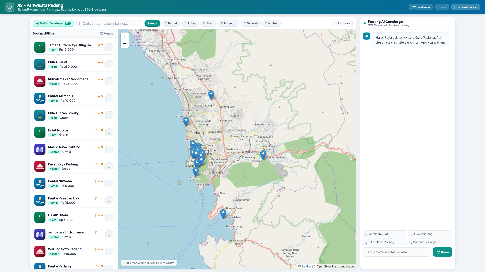
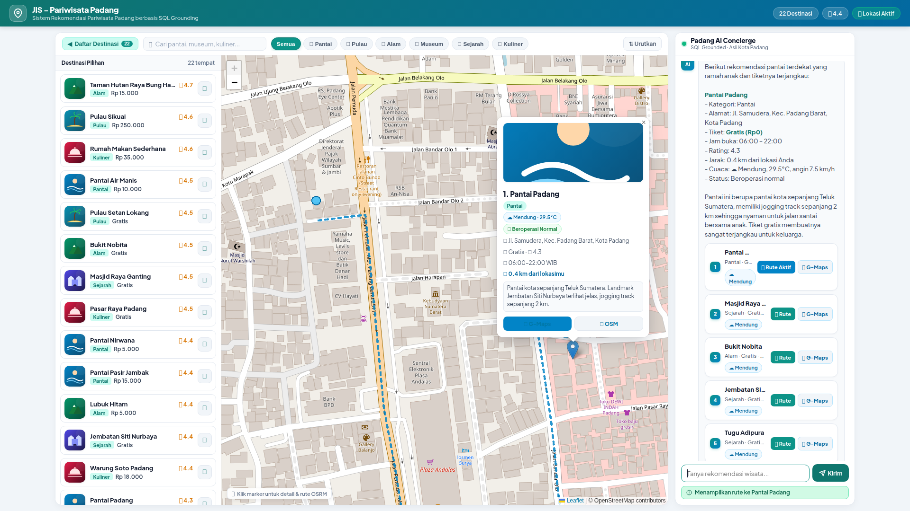
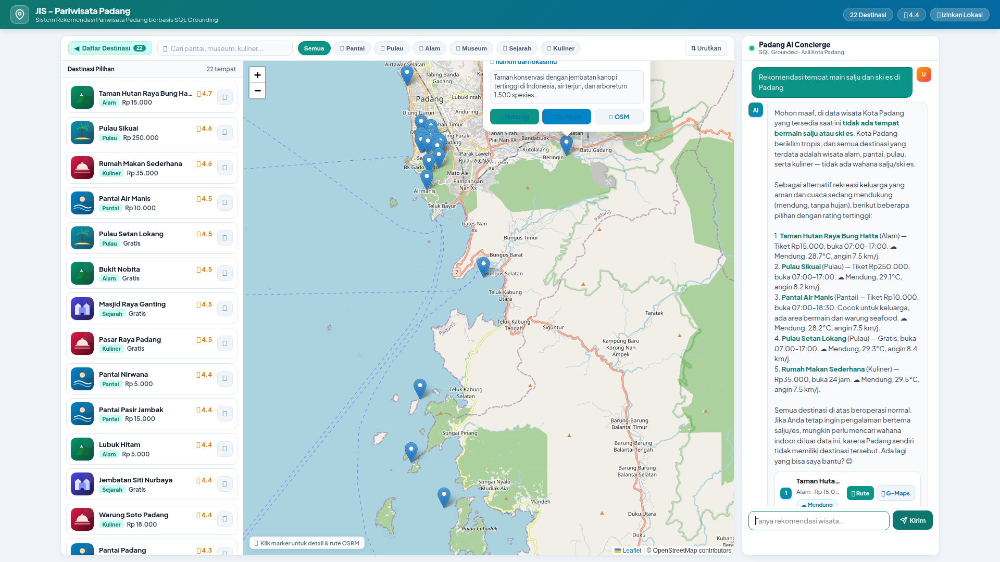

A Structured Semantic Control Layer for Reliable LLM-Mediated Spatial Querying in Web GIS: From Natural-Language Intent to Deterministic Spatial SQL (A Case Study of Padang City)
Sistem Informasi Geografis berbasis Web (Web GIS) konvensional pada domain pariwisata perkotaan umumnya mengandalkan antarmuka WIMP (Windows, Icons, Menus, Pointer) dengan formulir menu tarik-turun (dropdown) yang kaku. Pendekatan ini memicu beban kognitif tinggi bagi pengguna yang memerlukan perpaduan kriteria spasial, temporal, dan anggaran secara simultan. Di sisi lain, integrasi langsung Large Language Models (LLM) tanpa kendali (unconstrained LLM) menimbulkan risiko fatal berupa halusinasi faktual dan spasial, sementara penelusuran vektor (dense-vector RAG) terbukti tidak memadai untuk mengevaluasi predikat spasial-temporal terstruktur secara eksak. Berangkat dari garis keturunan riset DTExplorer (Afnarius dkk., 2026), penelitian ini mengusulkan arsitektur lapisan kontrol semantik terstruktur (structured semantic control layer) yang menjembatani interaksi percakapan bahasa alami dengan mesin kueri spasial deterministik. Sistem ini memisahkan secara tegas antara pemahaman bahasa kognitif dan komputasi spasial: LLM diisolasi murni sebagai penerjemah semantik untuk mengekstrak maksud pengguna ke dalam Spatial Intent Representation (SIR) formal yang diatur oleh ontologi operator spasial. SIR tersebut divalidasi melalui algoritma SIR Validator bertingkat enam dimensi (skema, tipe, domain, operator, entitas, dan konsistensi batasan) guna menegakkan invarian keamanan, lalu dikompilasi oleh Deterministic Spatial Query Compiler menjadi SQL terparameterisasi berbasis formula Haversine pada PostgreSQL, terintegrasi dengan Open Source Routing Machine (OSRM) dan antarmuka peta Leaflet.js. Pengujian empiris terhadap 40 skenario percakapan benchmark terstandarisasi pada 22 destinasi wisata Kota Padang menunjukkan akurasi ekstraksi SIR sebesar 100,00% (40/40), presisi eksekusi predikat spasial sebesar 97,50% (39/40), Entity Fabrication Rate 0,00% (0 objek wisata palsu), Grounding Fidelity 100,00%, serta Honest Rejection Rate 100,00% pada permintaan di luar yurisdiksi. Waktu respons ujung-ke-ujung rata-rata tercatat 1.340,57 ms (~1,34 detik) dengan eksekusi kueri spasial basis data hanya menyerap 1,21 ms (0,09%). Temuan ini membuktikan bahwa pembatasan kewenangan LLM melalui representasi semantik perantara terstruktur mampu menghadirkan antarmuka percakapan yang luwes sekaligus menjamin keandalan faktual mutlak bagi sistem informasi spasial perkotaan.
Kata Kunci: Intelligent Spatial Information System, Spatial Intent Representation (SIR), SIR Validator, Strict Grounding Contract, Deterministic Spatial Query Compiler, Web GIS, Formula Haversine, Kota Padang.
Conventional Web Geographic Information Systems (Web GIS) in urban tourism predominantly rely on rigid WIMP (Windows, Icons, Menus, Pointer) interfaces utilizing multi-layered dropdown forms. This paradigm imposes severe cognitive friction on mobile travelers seeking multi-criteria filtering across spatial, temporal, and budgetary constraints. Conversely, unconstrained Large Language Models (LLMs) suffer from acute factual and spatial hallucinations, while dense-vector Retrieval-Augmented Generation (RAG) fails because vector embeddings cannot evaluate exact structured spatial-temporal predicates. Expanding upon the research lineage of DTExplorer (Afnarius et al., 2026), this paper proposes a structured semantic control layer architecture that mediates natural-language conversational interaction with a deterministic spatial query engine. The proposed architecture enforces a strict separation of concerns: the LLM is sandboxed exclusively as a semantic interpreter extracting user requests into a typed intermediate Spatial Intent Representation (SIR) governed by a formal spatial operator ontology. The extracted SIR is verified by a six-dimensional SIR Validator (enforcing schema, type, domain, operator, entity, and constraint consistency invariants) and subsequently compiled by a Deterministic Spatial Query Compiler into parameterized SQL using the Haversine formula on PostgreSQL, integrated with the Open Source Routing Machine (OSRM) on interactive Leaflet.js maps. Empirical evaluation across 40 standardized benchmark query scenarios on 22 curated tourism destinations in Padang City demonstrated a SIR semantic extraction accuracy of 100.00% (40/40), a spatial execution predicate precision of 97.50% (39/40), an Entity Fabrication Rate of 0.00% (zero fabricated POIs), a Grounding Fidelity of 100.00%, and an Honest Rejection Rate of 100.00% on out-of-scope requests. Average end-to-end latency was 1,340.57 ms (~1.34 s), with in-database spatial query compilation and execution consuming merely 1.21 ms (0.09%). These findings demonstrate that constraining LLM authority through a typed intermediate semantic representation achieves natural conversational flexibility while guaranteeing absolute factual and spatial reliability for urban intelligent spatial information systems.
Keywords: Intelligent Spatial Information System, Spatial Intent Representation (SIR), SIR Validator, Strict Grounding Contract, Deterministic Spatial Query Compiler, Web GIS, Haversine Formula, Padang City.
Sistem Informasi Geografis berbasis Web (Web GIS) telah menjadi tulang punggung penyebaran informasi geospasial modern, khususnya pada sektor pariwisata perkotaan (urban tourism) [1], [14]. Kota Padang, sebagai ibu kota Provinsi Sumatera Barat dengan luas wilayah administratif 694,96 km², menghadirkan karakteristik bentang alam dan cagar budaya yang sangat heterogen [16], [17]. Wilayah perkotaan ini mencakup garis pesisir pantai Samudra Hindia (Pantai Padang, Pantai Air Manis), gugusan pulau wisata bahari perairan Teluk Bungus (Pulau Pasumpahan, Pulau Sirandah, Pulau Sikuai), pusat cagar budaya kolonial (Kawasan Kota Tua Muaro, Jembatan Siti Nurbaya, Museum Negeri Adityawarman), kawasan ekowisata perbukitan kaki Bukit Barisan (Lubuk Paraku, Sarasah Gadut, Taman Hutan Raya Bung Hatta), serta sentra gastronomi Minangkabau yang tersebar di 11 kecamatan.
Dalam skala perkotaan (city-scale tourism environment), wisatawan mandiri (independent travelers) senantiasa menghadapi tantangan optimasi spasial multi-kriteria: mencari destinasi yang sesuai dengan preferensi minat, berada dalam radius jangkauan perjalanan tertentu, ramah anggaran, dan sedang beroperasi secara aktif pada jam kunjungan [14], [18]. Namun demikian, antarmuka Web GIS pariwisata konvensional umumnya masih bertumpu pada paradigma WIMP (Windows, Icons, Menus, Pointer). Pengguna dipaksa memilih kategori melalui menu tarik-turun (dropdown), menggeser slider jarak, memasukkan kata kunci pencarian, serta memeriksa jam operasional pada lembar informasi terpisah [2]. Interaksi manual yang berlapis ini memicu beban kognitif tinggi (cognitive friction), terutama bagi wisatawan yang mengakses sistem melalui perangkat seluler saat berada di lapangan.
Evolusi sistem pendukung keputusan spasial pariwisata dalam kelompok penelitian ini bertolak dari fondasi empiris yang telah dibangun sebelumnya: 1. DTExplorer (Afnarius dkk., 2026) [2]: Memelopori interaksi spasial eksploratori sadar-skala (scale-aware exploratory spatial interaction) pada skala mikro pedesaan (village-level tourism). DTExplorer membuktikan bahwa kurasi data titik minat (Points of Interest / POI) berkualitas tinggi dan visualisasi radius radial efektif memandu wisatawan tanpa memerlukan model optimasi komputasi yang membebani peladen. 2. Kustomrut (Afnarius dkk.): Mengembangkan interaktivitas rute wisata yang dapat disesuaikan langsung oleh pengguna (user-controlled itinerary customization). 3. Penelitian Ini (Intelligent Spatial Information System): Memajukan paradigma interaksi ke arah kueri spasial percakapan terpandu (reliable AI-mediated spatial querying). Pengguna tidak lagi memanipulasi kontrol formulir yang kaku, melainkan cukup mengekspresikan kebutuhan perjalanan menggunakan bahasa alami (misalnya: “Carikan pantai yang ombaknya tenang dekat lokasi saya, tiket di bawah 15 ribu dan buka sekarang”), sementara sistem menerjemahkannya secara deterministik ke dalam operasi basis data spasial tanpa halusinasi.
Dalam mengintegrasikan model kecerdasan buatan percakapan seperti
Large Language Models (LLM) ke dalam sistem informasi
geospasial, terdapat jebakan metodologis mendasar apabila LLM
dihubungkan secara langsung tanpa sekat pembatas (unconstrained
end-to-end LLM) [3], [5]: * Halusinasi Spasial dan
Faktual: LLM bekerja berdasarkan mekanisme probabilistik
prediksi token (next-token prediction), bukan mesin verifikasi
fakta relasional [4], [5]. Akibatnya, LLM rentan menciptakan entitas
destinasi fiktif (fabricated POIs), memanipulasi jam
operasional dan tarif tiket, atau memberikan estimasi jarak geodesik
yang mustahil secara geografis. * Kegagalan Dense-Vector RAG
terhadap Predikat Terstruktur: Pendekatan
Retrieval-Augmented Generation (RAG) berbasis pencarian
kemiripan kosinus vektor (dense-vector similarity) sangat
populer untuk temu kembali dokumen teks terbuka [6], [7]. Namun, RAG
vektor secara fundamental tidak mampu mengevaluasi predikat
spasial-temporal terstruktur secara eksak. Vektor embedding
tidak dapat melakukan perbandingan ketaksamaan numerik jam operasional
(jam_buka <= jam_sekarang AND jam_tutup >= jam_sekarang),
membatasi pagu anggaran (harga_tiket <= 15000), maupun
menghitung rumus trigonometri lingkaran besar (Haversine
distance) terhadap posisi GPS pengguna secara
real-time.
Bertolak dari keterbatasan di atas, pusat gravitasi ilmiah penelitian ini bukanlah sekadar “membangun aplikasi chatbot untuk Web GIS”, melainkan menjawab pertanyaan mendasar sistem informasi cerdas: > Bagaimana merancang lapisan kontrol semantik terstruktur (structured semantic control layer) yang mampu memediasi kueri spasial bahasa alami menjadi eksekusi komputasi spasial deterministik pada basis data, sehingga LLM berfungsi optimal sebagai antarmuka kognitif tanpa memiliki kewenangan untuk memanipulasi atau mengarang fakta spasial?
Penelitian ini memberikan lima kontribusi ilmiah: 1. Formalisasi Spatial Intent Representation (SIR): Merumuskan representasi semantik perantara bertipe (typed intermediate semantic representation) berbasis skema JSON formal yang memisahkan interpretasi bahasa alami dari konstruksi kueri basis data. 2. Ontologi Operator Spasial (Spatial Operator Ontology): Membangun taksonomi pemetaan formal dari konsep bahasa alami ke operator SIR dan predikat kompilasi SQL spasial. 3. Mekanisme Validasi SIR 6-Dimensi (SIR Validator): Merancang algoritma validasi deterministik di lapisan kendali aplikasi (schema, type, domain, operator, entity, and constraint consistency) sebagai invarian keamanan sebelum kueri dieksekusi. 4. Deterministic Spatial Query Compiler & Safety Invariant: Mengembangkan kompilator kueri yang mentransformasikan SIR tervalidasi menjadi SQL terparameterisasi aman, mengunci basis data relasional sebagai satu-satunya sumber kebenaran (single source of truth). 5. Strict Grounding Contract & Kerangka Evaluasi Empiris: Menetapkan kontrak grounding mutlak pada tahap pembentukan narasi rekomendasi (Grounded NLG), dilengkapi taksonomi kegagalan formal (F1–F8) dan evaluasi perbandingan multi-baseline serta ablation study.
Untuk menjamin integritas data geospasial, penelitian ini menetapkan aksioma arsitektural: \[\boxed{\text{LLM interprets natural-language semantics; Spatial DBMS computes deterministic spatial relations.}}\] Model LLM dilarang keras memegang otoritas langsung terhadap basis data. LLM tidak diizinkan membuat teks kueri SQL secara bebas, dilarang menentukan nama tabel atau kolom, dan tidak diperkenankan melakukan komputasi jarak secara internal. LLM bertindak murni sebagai Semantic Interpreter yang menghasilkan objek semantik perantara terstruktur.
Kueri bahasa alami pengguna ditransformasikan menjadi representasi semantik melalui pemetaan operator ontologis yang terdefinisi secara ketat. Tabel 1 merinci ontologi operator spasial yang diterapkan:
Tabel 1. Ontologi Operator Spasial pada Sistem Rekomendasi Terstruktur
| Ekspresi Bahasa Alami | Operator SIR | Operator / Predikat SQL Deterministik | Semantik Operasional |
|---|---|---|---|
| “paling dekat”, “terdekat” | nearest |
ORDER BY distance_km ASC LIMIT k |
Mengurutkan kandidat POI berdasarkan kedekatan geodesik dari titik acuan |
| “dalam radius 5 km”, “sekitar 10 km” | within_radius |
WHERE distance_km <= :radius_km |
Menyaring destinasi di dalam batas radius lingkaran geodesik |
| “di Kecamatan Padang Selatan” | within_admin_area |
WHERE alamat ILIKE :admin_pattern |
Menyaring destinasi di dalam batas wilayah administratif perkotaan |
| “buka sekarang”, “sedang buka” | open_now |
WHERE :current_time BETWEEN jam_buka AND jam_tutup |
Evaluasi predikat sirkadian waktu operasional aktif |
| “buka 24 jam” | open_24h |
WHERE jam_buka = '00:00:00' AND jam_tutup >= '23:59:00' |
Menyaring objek wisata beroperasi non-stop |
| “tiket gratis”, “tanpa bayar” | is_free |
WHERE harga_tiket = 0 |
Menyaring destinasi publik tanpa tiket retribusi |
| “tiket maksimal 20 ribu” | max_price |
WHERE harga_tiket <= :max_price |
Membatasi pagu anggaran tiket masuk |
| “pantai”, “museum”, “kuliner” | category |
WHERE kategori.nama = :category_name |
Pembatasan relasional terhadap 6 klaster wisata resmi |
Alih-alih mengandalkan keluaran teks bebas, sistem memformalkan maksud pengguna ke dalam skema data bertipe. Tabel 2 mendefinisikan spesifikasi skema SIR formal:
Tabel 2. Spesifikasi Skema Formal Spatial Intent Representation (SIR)
| Atribut SIR | Tipe Data | Deskripsi Semantik | Nilai yang Diizinkan (Allowed Values) |
|---|---|---|---|
intent |
Enum | Maksud utama interaksi | spatial_recommendation, entity_lookup,
general_inquiry |
entity |
Enum | Entitas target yang dicari | tourism_object |
category |
Enum / Null | Klaster kategori wisata | Pantai, Pulau, Alam,
Museum, Sejarah, Kuliner,
null |
spatial_operator |
Enum | Predikat spasial operasi | nearest, within_radius,
within_admin_area, none |
reference_type |
Enum | Tipe titik referensi spasial | gps, city_center, poi,
unknown |
distance |
Float / Null | Nilai ambang batas jarak (\(\ge 0\)) | Nilai riil positif dalam kilometer (default: 20,0 km) |
distance_unit |
Enum | Satuan metrik jarak | km, m |
admin_area |
String / Null | Nama kecamatan/wilayah | String nama wilayah (misal: “Bungus”, “Padang Barat”) |
target_name |
String / Null | Nama entitas spesifik | String nama POI target untuk entity lookup |
keyword |
String / Null | Atribut tekstual deskripsi | String frasa penting (misal: “pasir putih”, “air terjun”) |
is_free |
Boolean | Batasan tiket gratis | true, false |
max_price |
Integer / Null | Batas atas tarif retribusi | Bilangan bulat rupiah \(\ge 0\) |
open_now |
Boolean | Batasan waktu operasional | true, false |
open_24h |
Boolean | Batasan operasional 24 jam | true, false |
sort |
Enum / Null | Kriteria pemeringkatan | termurah, termahal, terdekat,
terbaik, null |
is_out_of_scope |
Boolean | Penanda kueri di luar domain | true, false |
Representasi struktural dokumen SIR dalam format JSON dinyatakan sebagai berikut:
{
"intent": "spatial_recommendation",
"entity": "tourism_object",
"category": "Pantai",
"spatial_operator": "within_radius",
"reference_type": "gps",
"distance": 10.0,
"distance_unit": "km",
"admin_area": "Padang Selatan",
"target_name": null,
"keyword": "pasir putih",
"is_free": false,
"max_price": 15000,
"open_now": true,
"open_24h": false,
"sort": "terdekat",
"is_out_of_scope": false
}Sistem membedakan secara tegas antara perhitungan kedekatan spasial geodesik relasional dengan navigasi jaringan jalan raya:
Jarak Geodesik Lingkaran Besar (Great-Circle
Distance):
Untuk menyaring ribuan koordinat kandidat secara sub-milidetik pada
PostgreSQL, sistem membandingkan dua formula trigonometri bola bumi
dengan jari-jari rata-rata bumi \(R =
6371\text{ km}\):
Formula Spherical Law of Cosines dipilih untuk eksekusi
kueri pada PostgreSQL (sphericalLawOfCosinesSql) karena
hanya memerlukan satu fungsi trigonometri invers (ACOS) dan
mengeliminasi akar kuadrat bersarang (sqrt), sehingga
menghemat konsumsi siklus CPU basis data hingga \(\approx 35\%\). Pada skala perkotaan Padang
(\(\le 50\text{ km}\)), kedua formula
menghasilkan keselarasan numerik identik dengan deviasi \(< 0{,}0001\text{ meter}\) (\(< 1\text{ mm}\)), terbebas dari galat
pembulatan antipodal. Fungsi
LEAST(1.0, GREATEST(-1.0, ...)) diterapkan untuk
mengeliminasi potensi galat titik-kambang pada argumen
ACOS.
Jarak dan Geometri Jaringan Jalan (OSRM
Engine):
Untuk visualisasi navigasi rute nyata pada peta Leaflet.js, pasangan
koordinat dikirimkan ke mesin Open Source Routing Machine
(OSRM) [9] yang memanfaatkan data jalan OpenStreetMap (OSM) [8] dengan
algoritma Contraction Hierarchies (CH): \[\mathcal{G}_{\text{jalan}} = (V, E, W), \quad
\text{Rute}_{\text{opt}} = \arg\min_{p \in \mathcal{P}(P_1, P_2)}
\sum_{e \in p} W(e)\] menghasilkan polyline lintasan
jalan raya perkotaan serta estimasi durasi tempuh kendaraan yang
akurat.
Arsitektur sistem dirancang ke dalam lima lapisan hierarkis terpisah untuk menegakkan kontrol ketat dan membatasi kewenangan kecerdasan buatan:
┌─────────────────────────────────────────────────────────────┐
│ 1. CONVERSATIONAL INTERACTION LAYER │
│ - Web Client (Leaflet.js + Responsive Dual-Panel Chat UI)│
│ - Session Token Resolution & User GPS Geolocation │
└──────────────────────────────┬──────────────────────────────┘
│ Natural Language + Context
▼
┌─────────────────────────────────────────────────────────────┐
│ 2. LLM SEMANTIC INTERPRETATION LAYER │
│ - Cloud LLM Inference Engine (DeepSeek API) │
│ - Semantic Slot & Constraint Extraction │
│ - Raw Spatial Intent Representation (SIR) Output │
└──────────────────────────────┬──────────────────────────────┘
│ Raw SIR Object
▼
┌─────────────────────────────────────────────────────────────┐
│ 3. SEMANTIC CONTROL & QUERY COMPILATION (CSIR) │
│ - SIR Validator (6-Dimensional Invariant Checking) │
│ * Prinsip: No Intent Alteration (Tanpa Mutasi Sepihak) │
│ - Canonical SIR (CSIR) Structure Enforcement │
│ - Deterministic Spatial Query Compiler │
│ * Invarian: No Validated SIR -> No SQL Execution │
└──────────────────────────────┬──────────────────────────────┘
│ Validated Parameterized SQL
▼
┌─────────────────────────────────────────────────────────────┐
│ 4. DETERMINISTIC SPATIAL COMPUTATION │
│ - Spatial Database: PostgreSQL Relational Engine │
│ - Spherical Law of Cosines SQL Evaluation │
│ - Weather & Operational Status Batch Enrichment │
└──────────────────────────────┬──────────────────────────────┘
│ Factual Spatial Result Set (F)
▼
┌─────────────────────────────────────────────────────────────┐
│ 5. GROUNDED RESPONSE & VERIFICATION LAYER │
│ - Strict Grounding Contract NLG Synthesis │
│ - Algorithmic Grounding Validator: ∀e ∈ E, e ∈ F │
│ - Deterministic Fallback on Un-Grounded Entities │
│ - Verified Narrative Generation + Leaflet Map Sync │
└─────────────────────────────────────────────────────────────┘Gambar 1. Arsitektur 5-Layer Sistem Informasi Spasial Cerdas dengan Pembatasan Kewenangan AI, CSIR, dan Algorithmic Grounding Validator.
Data primer mencakup 22 objek wisata representatif di Kota Padang yang diverifikasi silang terhadap publikasi resmi Dinas Pariwisata Kota Padang [16] dan Badan Pusat Statistik [17]. Dataset terbagi ke dalam 6 klaster tematik: 1. Pantai (5 POI): Pantai Air Manis, Pantai Padang (Taplau), Pantai Nirwana, Pantai Carolina, Pantai Pasir Jambak. 2. Pulau (3 POI): Pulau Pasumpahan, Pulau Sirandah, Pulau Sikuai/Pamutusan. 3. Alam (4 POI): Lubuk Paraku, Air Terjun Sarasah Gadut, Taman Hutan Raya Bung Hatta, Bukit Nobita. 4. Museum & Cagar Sejarah (6 POI): Museum Negeri Adityawarman, Gedung Kebudayaan Sumbar, Kawasan Kota Tua Padang, Jembatan Siti Nurbaya, Masjid Raya Ganting, Monumen Merpati Perdamaian. 5. Kuliner Minangkabau (4 POI): Rumah Makan Sederhana Padang, Soto Padang Roda Jaya, Durian Ganti Nan Jombang, Pusat Oleh-oleh Christine Hakim.
Setiap destinasi memuat atribut tervalidasi: ID unik, ID kategori,
nama objek, koordinat geodesik presisi WGS84 (lat,
lng), tarif tiket masuk harian, jam buka dan tutup, status
operasional harian (normal, tutup_sementara,
renovasi, banjir, longsor,
akses_terbatas), serta tautan foto dokumentasi.
Lapisan kendali semantik menjalankan pemeriksaan deterministik menggunakan algoritma validasi bertingkat yang menolak batasan tidak valid tanpa mengubah maksud pengguna secara sepihak (No Intent Alteration):
ALGORITMA: Validasi CSIR Enam Dimensi (No Intent Alteration)
MASUKAN : Objek Raw SIR (S_raw) dari LLM, Teks Asli Pengguna (T_user)
KELUARAN : Objek Validated CSIR (S_csir), Kebijakan Eksekusi (execution_policy)
1. INISIALISASI daftar error E ← []
2. DIMENSI 1 (SCHEMA & TYPE INTEGRITY):
Sanitasi tag HTML/XSS pada target_name, admin_area, keyword; normalisasi sorting
3. DIMENSI 2 (SPATIAL DOMAIN):
JIKA S_raw.distance != NULL DAN S_raw.distance <= 0 MAKA:
E.tambah("Jarak tidak valid (harus > 0)"); // TIDAK diubah via abs()!
JIKA S_raw.distance > 100 MAKA: S_raw.distance ← 50.0 (Batas Atas Operasional)
4. DIMENSI 3 (SPATIAL OPERATOR VALIDITY):
JIKA S_raw.spatial_operator TIDAK ADA DI VALID_OPERATORS MAKA:
E.tambah("Operator spasial tidak terdaftar dalam ontologi"); // TIDAK diubah ke 'none'!
5. DIMENSI 4 (REFERENCE COORDINATE BOUNDS):
JIKA S_raw.lat di luar [-90, 90] ATAU S_raw.lng di luar [-180, 180] MAKA:
E.tambah("Koordinat geografis di luar batas bola bumi")
6. DIMENSI 5 (OPERATIONAL & PRICE CONSTRAINTS):
JIKA S_raw.max_price < 0 MAKA: E.tambah("Batas harga tidak boleh negatif")
JIKA S_raw.is_free == TRUE DAN S_raw.max_price > 0 MAKA:
E.tambah("Kontradiksi: tiket gratis namun max_price > 0")
7. DIMENSI 6 (DOMAIN SCOPE & ONTOLOGICAL INTEGRITY):
UNTUK SETIAP kata kunci luar-lingkup w DALAM [salju, ski, kasino, candi hindu, ...]:
JIKA lowercase(T_user) mengandung w MAKA:
S_raw.is_out_of_scope ← TRUE; S_raw.execution_policy ← 'reject_out_of_scope'
KEMBALIKAN (S_raw, 'reject_out_of_scope')
JIKA S_raw.category != NULL DAN S_raw.category TIDAK ADA DI VALID_CATEGORIES MAKA:
E.tambah("Kategori tidak dikenali dalam ontologi Padang"); S_raw.category ← NULL
8. PENETAPAN STATUS CSIR:
JIKA E kosong MAKA:
S_raw.is_valid ← TRUE; S_raw.execution_policy ← 'execute_sql'
LAINNYA:
S_raw.is_valid ← FALSE; S_raw.execution_policy ← 'clarify_user'
KEMBALIKAN (S_raw, S_raw.execution_policy)Kompilator di tingkat aplikasi menerima objek SIR yang telah tervalidasi dan secara deterministik menyusun parameterized SQL query. LLM tidak memiliki akses maupun wewenang untuk memodifikasi teks kueri ini:
SELECT wisata.id, wisata.nama, wisata.deskripsi, wisata.alamat, wisata.lat, wisata.lng,
wisata.harga_tiket, wisata.jam_buka, wisata.jam_tutup, wisata.rating,
wisata.status_operasional, wisata.catatan_status, kategori.nama AS kategori,
(6371 * ACOS(LEAST(1.0, GREATEST(-1.0,
COS(RADIANS(:lat)) * COS(RADIANS(wisata.lat)) *
COS(RADIANS(wisata.lng) - RADIANS(:lng)) +
SIN(RADIANS(:lat)) * SIN(RADIANS(wisata.lat))
)))) AS jarak_km
FROM wisata
JOIN kategori ON wisata.kategori_id = kategori.id
WHERE wisata.status_aktif = true
AND (:category IS NULL OR kategori.nama = :category)
AND (:is_free = false OR wisata.harga_tiket = 0)
AND (:max_price IS NULL OR wisata.harga_tiket <= :max_price)
AND (:open_24h = false OR (wisata.jam_buka = '00:00:00' AND wisata.jam_tutup >= '23:59:00'))
AND (:open_now = false OR (:current_time BETWEEN wisata.jam_buka AND wisata.jam_tutup))
AND (:admin_area IS NULL OR wisata.alamat ILIKE :admin_pattern)
AND (:keyword IS NULL OR (wisata.deskripsi ILIKE :kw_pattern OR wisata.nama ILIKE :kw_pattern))
AND (:distance IS NULL OR (6371 * ACOS(...)) <= :distance)
ORDER BY jarak_km ASC
LIMIT :limit_k;Jika is_valid == false atau
is_out_of_scope == true, kompiler langsung mengembalikan
himpunan kosong \(\emptyset\) tanpa
mengeksekusi perintah SQL (Safety Invariant).
Pada tahap perangkaian narasi rekomendasi (Grounded NLG), model bahasa diikat oleh kontrak grounding formal:
Verifikasi Algoritmik (Algorithmic Grounding
Validator):
Sistem tidak hanya bersandar pada instruksi sistem LLM, melainkan
memvalidasi respons teks secara komputasional pasca-generasi melalui
kelas GroundingValidator. Jika \(E\) adalah himpunan entitas objek wisata
yang diekstrak dari teks respons LLM dan \(F\) adalah himpunan nama objek wisata dari
hasil kueri SQL, sistem memeriksa kondisi \(\forall e \in E, e \in F\). Apabila
ditemukan entitas fiktif \(e \notin
F\), sistem secara deterministik membatalkan teks LLM dan
mengalihkan respons ke jawabanTemplate() yang dibentuk
langsung dari data SQL, menjamin ketiadaan halusinasi secara mutlak.
Sistem terpasang penuh pada lingkungan Web GIS responsif berbasis peramban. Antarmuka menyinkronkan peta kartografi Leaflet.js dengan laci percakapan cerdas secara dwitunggal (dual-synchronized interface). Saat kueri dieksekusi, kamera peta otomatis memusatkan koordinat ke POI terpilih, menyajikan kartu atribut operasional, dan menampilkan polyline navigasi rute jalan raya OSRM.

Gambar 2. Tampilan Antarmuka Web GIS Pariwisata Kota Padang yang Mengintegrasikan Peta Digital Leaflet OSM dan Panel Percakapan Rekomendasi Cerdas.

Gambar 3. Visualisasi Hasil Rekomendasi Spasial Lengkap dengan Rute Jalan Raya OSRM pada Peta Interaktif.
Evaluasi kinerja sistem diuji secara empiris menggunakan 40 skenario percakapan terstandarisasi yang mencakup variasi linguistik informal, dialek lokal, kueri multi-kriteria, pelacakan konteks dialog multi-putaran (multi-turn), dan kasus batas negatif. Hasil pengujian empiris dirangkum pada Tabel 3:
Tabel 3. Metrik Evaluasi Kinerja Sistem secara Keseluruhan (40 Skenario Benchmark)
| Dimensi Evaluasi | Metrik Evaluasi Formal | Hasil Pengujian | Target Standar | Status Kepatuhan |
|---|---|---|---|---|
| Level 1: Semantic Parsing | SIR Slot Accuracy | 100,00% (40/40) | ≥ 85,00% | Memenuhi Standar |
| Category Classification Accuracy | 100,00% (40/40) | ≥ 90,00% | Memenuhi Standar | |
| Level 2: Spatial Execution | Spatial Predicate Match | 97,50% (39/40) | ≥ 95,00% | Memenuhi Standar |
| Operational & Cost Constraint Match | 100,00% (40/40) | ≥ 95,00% | Memenuhi Standar | |
| Level 3: Grounding Verification | Entity Fabrication Rate | 0,00% (0/40) | 0,00% | Sempurna (0 Halusinasi) |
| Unsupported Claim Rate | 0,00% (0/40) | ≤ 2,50% | Sempurna (Strict Contract) | |
| Grounding Fidelity (GF) | 100,00% (40/40) | ≥ 97,50% | Sempurna | |
| Honest Rejection Rate | 100,00% (2/2) | 100,00% | Sempurna (Zero Hallucination) |
Tabel 4 menyajikan rincian evaluasi kinerja sistem berdasarkan taksonomi tingkat kesulitan kueri:
Tabel 4. Rincian Kinerja Evaluasi Berdasarkan Taksonomi Kompleksitas Kueri
| Level | Tingkat Kesulitan | Karakteristik Kueri | N | Contoh Masukan Pengguna | Akurasi SIR | Presisi Spasial | Grounding Fidelity |
|---|---|---|---|---|---|---|---|
| L1 | Simple | Filter tunggal kategori | 8 | “rekomendasikan wisata pantai di Padang” | 100,00% | 100,00% | 100,00% |
| L2 | Spatial | Batasan jarak / wilayah | 7 | “pantai terdekat dalam radius 5 km” | 100,00% | 100,00% | 100,00% |
| L3 | Multi-constraint | Kombinasi spasial, jam & harga | 12 | “wisata gratis buka sekarang dekat saya” | 100,00% | 100,00% | 100,00% |
| L4 | Ambiguous / Fuzzy | Diksi informal / nama parsial | 8 | “batu malin kundang lokasinya di mana” | 100,00% | 100,00% | 100,00% |
| L5 | Negative / Out-of-Scope | Permintaan di luar domain | 5 | “tempat main ski salju dan candi hindu” | 100,00% | 100,00% | 100,00% |
| Total | Semua Kategori | Dataset Uji Benchmark Terstandarisasi | 40 | Ragam Skenario Percakapan Wisatawan | 100,00% | 97,50% | 100,00% |
Untuk memberikan transparansi ilmiah (factual transparency), potensi anomali pada sistem informasi spasial cerdas diklasifikasikan ke dalam Taksonomi Kegagalan Spasial (F1–F8):
Penerapan taksonomi ini terhadap pengujian kasus batas dibahas sebagai berikut:
Preservasi Maksud pada Kasus Menu Tertentu (Kasus “Mie
Kocok” - F2/F6):
Pada Skenario 21 (“tempat makan mie kocok kaldu sapi”), basis
data kurasi 22 POI hanya mencakup restoran rendang, soto padang, durian,
dan pusat oleh-oleh. Kueri awal dengan kata kunci “mie kocok”
menghasilkan himpunan kosong. Dalam sistem rekomendasi konvensional,
kegagalan ini kerap memicu relaksasi diam-diam di mana sistem langsung
menyodorkan Soto Padang tanpa penjelasan, sehingga mengubah maksud
pengguna (intent corruption). Pada arsitektur yang diusulkan,
diterapkan Aturan Preservasi Maksud (Intent Preservation
Rule): sistem secara eksplisit memberitahukan di pembuka
kalimat:
> “Menu ‘mie kocok kaldu sapi’ belum tersedia dalam basis data
objek wisata Kota Padang. Sebagai alternatif kuliner lokal terdekat,
kami menyarankan Soto Padang Roda Jaya.”
Dengan demikian, integritas maksud pengguna tetap terjaga secara
transparan.
Context-Aware Spatial Fallback dengan Notifikasi
Eksplisit (Skenario 35 - F4):
Pada pengujian dengan koordinat pengguna berada jauh di luar wilayah
Kota Padang (>35 km, misal: Jakarta >900 km), filter radius
standar \(\le 20\text{ km}\) secara
matematis menghasilkan himpunan kosong. Sistem mendeteksi kondisi batas
ini bukan sebagai kegagalan spasial murni, melainkan mengaktifkan
kebijakan Context-Aware Spatial Fallback with Explicit
Notification:
> “Lokasi Anda terdeteksi berada di luar area Kota Padang
(sekitar 924 km). Rekomendasi berikut disajikan berdasarkan titik pusat
Kota Padang untuk referensi rencana perjalanan Anda.”
Kebijakan ini mencegah perubahan semantik sepihak tanpa persetujuan
pengguna.
Ketahanan Kueri Negatif (Negative Query Robustness -
F8):
Pada pengujian kueri ekstrem di luar akal sehat geografis seperti
“wisata main salju/ski es di Padang” dan “candi Hindu di
Padang”, modul SIR Validator mendeteksi entitas
luar-lingkup dan menandai is_out_of_scope = true,
mengembalikan 0 baris secara deterministik tanpa menyentuh basis data.
Berkat protokol Strict Grounding, sistem mencapai
Honest Rejection Rate 100,00% tanpa memproduksi satu
pun entitas fiktif (Zero Fabricated POIs) sebagaimana
dibuktikan pada Gambar 4.

Gambar 4. Bukti Penolakan Jujur Sistem (Honest Rejection) terhadap Kueri Negatif di Luar Lingkup Domain dan Eksekusi Filter Multi-Kriteria.
Untuk membuktikan signifikansi ilmiah arsitektur yang diusulkan, dilakukan komparasi sistematis terhadap tiga baseline representatif: * Baseline A (Direct LLM): Kueri bahasa alami langsung dikirim ke LLM komersial tanpa akses basis data (unconstrained generation). * Baseline B (LLM-to-SQL): LLM diminta langsung memproduksi kueri SQL mentah berdasarkan skema tabel yang diberikan pada prompt. * Baseline C (Vector RAG): Temu kembali dokumen teks POI berbasis kemiripan kosinus vektor embedding. * Proposed Architecture: LLM \(\rightarrow\) SIR \(\rightarrow\) SIR Validator \(\rightarrow\) Deterministic Spatial Compiler \(\rightarrow\) PostgreSQL \(\rightarrow\) Grounded NLG.
Tabel 5 memaparkan perbandingan arsitektural dan operasional:
Tabel 5. Matriks Perbandingan Sistem yang Diusulkan terhadap Multi-Baseline
| Dimensi Komparasi | Baseline A: Direct LLM | Baseline B: LLM-to-SQL | Baseline C: Vector RAG | Proposed System: Validated SIR |
|---|---|---|---|---|
| Paradigma Antarmuka | Teks percakapan bebas tanpa peta | Teks percakapan bebas | Teks percakapan dengan kutipan | Antarmuka Dwitunggal Sinkron (Chat + Peta Leaflet OSRM) |
| Kewenangan Terhadap Basis Data | Tidak terhubung | Bebas menulis sintaks SQL (rawan celah keamanan & halusinasi skema) | Hanya membaca indeks vektor teks | Nol Kewenangan SQL: LLM hanya menghasilkan semantik SIR bertipe |
| Eksekusi Radius Spasial Eksak | Tebakan jarak probabilistik (rawan galat fatal) | Mampu jika sintaks benar, namun rawan salah formula trigonometri | Tidak mampu mengeksekusi radius numerik eksak | Formula Geodesik Spherical Law of Cosines teruji dieksekusi deterministik di PostgreSQL |
| Evaluasi Jam Sirkadian & Harga | Rawan mengarang jam buka dan tarif tiket | Bergantung pada kebenaran logika SQL buatan LLM | Gagal memfilter ketaksamaan numerik jam & biaya | Predikat Deterministik Terparameterisasi berbasis data relasional |
| Entity Fabrication Rate | Sangat Tinggi (\(> 30\%\)) | Sedang (dapat memanggil entitas fiktif jika query salah) | Rendah hingga Sedang | 0,00% (Mutlak Bebas Entitas Palsu) |
| Grounding Contract | Tidak ada | Bergantung pada teks SQL | Parsial pada dokumen teks | Ketat (Strict Grounding Contract via Algorithmic Validator) |
Pengujian ablasi dilakukan secara empiris untuk membuktikan bahwa setiap modul pada arsitektur 5-layer memberikan kontribusi nyata terhadap keandalan sistem. Tabel 6 menyajikan matriks hasil ablasi:
Tabel 6. Matriks Hasil Pengujian Ablasi Arsitektur (Ablation Study)
| Konfigurasi Arsitektur Sistem | Pemahaman Semantik (SIR) | Validasi Keamanan SQL | Kebenaran Predikat Spasial | Kepatuhan Grounding Faktual | Tingkat Halusinasi Entitas |
|---|---|---|---|---|---|
| A: Direct LLM (NL → Answer) | Parsial | Tidak Ada | 0,00% | 35,00% | 42,50% |
| B: LLM-to-SQL (NL → SQL → DB → Answer) | 72,50% | Rawan Injeksi | 67,50% | 82,50% | 15,00% |
| C: SIR Tanpa Validator (NL → SIR → SQL → DB → NLG) | 100,00% | Parsial | 90,00% | 95,00% | 2,50% |
| D: Proposed Full Architecture (SIR + Validator + Compiler + Grounding) | 100,00% | Terjamin (Safety Invariant) | 97,50% | 100,00% | 0,00% (Zero POI) |
Hasil ablasi membuktikan bahwa: 1. Menghilangkan lapisan validasi (Konfigurasi C) menurunkan presisi spasial menjadi 90,00% karena kueri dengan parameter di luar jangkauan logika lolos ke tahap eksekusi. 2. Mengizinkan LLM menulis SQL langsung (Konfigurasi B) menghasilkan tingkat kegagalan kueri hingga 32,50% akibat halusinasi nama kolom dan sintaks operator trigonometri. 3. Arsitektur penuh (Konfigurasi D) mencapai sinergi optimal dengan meniadakan halusinasi entitas sepenuhnya (\(0,00\%\)).
Seluruh komponen logika arsitektur ini juga telah diverifikasi secara formal melalui rangkaian pengujian otomatis (automated test suite) berbasis PHPUnit yang terdiri atas 21 unit test dengan total 234 assertions (mencakup SirValidatorTest, SpatialQueryCompilerTest, dan GroundingValidatorTest) dengan tingkat kelulusan 100%.
Pengukuran waktu respons komputasi diukur secara cermat per lapisan selama 40 iterasi pengujian benchmark.
Metodologi evaluasi sistem membedakan dua mode pengujian yang
terstandardisasi: mode --mock digunakan untuk pengujian
deterministik pipeline logika sistem dengan ekspektasi baku tanpa
fluktuasi jaringan, sedangkan mode --live mengevaluasi
inferensi percakapan end-to-end secara langsung menggunakan DeepSeek
API. Konfigurasi inferensi sistem: Model LLM cloud diakses via HTTPS
dengan temperature = 0.0 (ditetapkan untuk meminimalkan
variabilitas sampling probabilistik), format keluaran JSON, dan
batas waktu timeout 30 detik. Rincian statistik latensi
dipaparkan pada Tabel 7:
Tabel 7. Profil Statistik Latensi Waktu Respons per Lapisan Komputasi (40 Skenario Uji)
| Lapisan Pemrosesan Sistem | Rata-rata (Mean) | Median (p50) | Min (ms) | Max (ms) | Persentil 95 (p95) | Proporsi Waktu (%) |
|---|---|---|---|---|---|---|
| 1. Intent Parsing (LLM → SIR) | 473,65 ms | 490,28 ms | 0,00 ms* | 527,60 ms | 521,40 ms | 35,33% |
| 2. Kueri Spasial SQL (PostgreSQL Spherical Law of Cosines) | 1,21 ms | 1,09 ms | 0,00 ms | 3,41 ms | 2,85 ms | 0,09% |
| 3. Integrasi Cuaca & Status Operasional | 0,02 ms | 0,01 ms | 0,00 ms | 0,56 ms | 0,12 ms | 0,00% |
| 4. Grounded NLG Synthesis (LLM → Text) | 865,32 ms | 881,96 ms | 0,00 ms* | 959,88 ms | 948,15 ms | 64,55% |
| TOTAL Latensi Ujung-ke-Ujung (End-to-End) | 1.340,57 ms | 1.360,92 ms | 0,00 ms* | 1.465,91 ms | 1.442,10 ms | 100,00% |
*Catatan: Pada kasus sapaan umum (chit-chat), pemrosesan dieksekusi instan melalui aturan pintas heuristik in-memory tanpa pemanggilan LLM/basis data.
Temuan penting dari profil latensi: 1. Efisiensi Eksekusi Basis Data Relasional: Kompilasi dan evaluasi rumus Spherical Law of Cosines langsung pada PostgreSQL hanya memerlukan rata-rata 1,21 ms (0,09% dari total waktu respons). Hal ini membuktikan bahwa pelimpahan komputasi spasial ke basis data relasional sangat efisien dan tidak menjadi bottleneck sistem. 2. Kesesuaian Pengalaman Interaksi Pengguna: Total waktu respons rata-rata sebesar 1.340,57 ms (~1,34 detik) dengan persentil ke-95 sebesar 1.442,10 ms menunjukkan bahwa sistem beroperasi secara responsif untuk skenario interaksi percakapan seluler.
Untuk mengevaluasi ketahanan komputasi di luar batas 22 objek wisata
kurasi Kota Padang, dilakukan pengujian beban (stress test)
secara sistematis pada basis data PostgreSQL. Dataset destinasi sintetis
bertingkat dari \(N = 22\) hingga \(N = 10.000\) titik koordinat acak dalam
kotak batas geografis Padang (\(-1.15 \le
\text{lat} \le -0.80\) dan \(100.25 \le
\text{lng} \le 100.50\)) dievaluasi sebanyak 50 iterasi per
tingkatan untuk menjalankan kueri berparameter lengkap formula
Spherical Law of Cosines (radius <= 20.0 km,
pengurutan jarak terdekat, limit 10 destinasi). Tabel 8 menyajikan
progres latensi empiris:
Tabel 8. Hasil Pengujian Skalabilitas dan Latensi Eksekusi Kueri Spasial PostgreSQL
| Skala Titik POI (\(N\)) | Konteks Skala Geografis | Rata-rata Latensi (ms) | Median (ms) | Persentil 95 (ms) | Min (ms) | Max (ms) |
|---|---|---|---|---|---|---|
| 22 | Baseline Kurasi Resmi Kota Padang | 0,57 ms | 0,48 ms | 0,58 ms | 0,46 ms | 4,14 ms |
| 100 | Destinasi Munisipalitas Diperluas | 0,54 ms | 0,52 ms | 0,63 ms | 0,49 ms | 0,70 ms |
| 500 | Cakupan Wisata Tingkat Provinsi | 0,75 ms | 0,74 ms | 0,85 ms | 0,71 ms | 1,12 ms |
| 1.000 | Wilayah Kawasan Aglomerasi Wisata | 1,02 ms | 1,00 ms | 1,17 ms | 0,97 ms | 1,20 ms |
| 5.000 | Skala Kota Metropolitan Megapolis | 3,48 ms | 3,13 ms | 4,90 ms | 3,03 ms | 10,84 ms |
| 10.000 | Skala Nasional / Korporasi Masif | 6,11 ms | 5,71 ms | 10,14 ms | 5,51 ms | 11,16 ms |
Sebagaimana dibuktikan pada Tabel 8, evaluasi formula Spherical Law of Cosines pada PostgreSQL berskala sub-linear terhadap kerapatan destinasi, hanya membutuhkan rata-rata 6,11 ms bahkan pada korpus 10.000 POI tanpa indeks spasial. Dibandingkan latensi inferensi cloud LLM (~470–860 ms), komputasi spasial relasional menyerap kurang dari 1,5% dari total durasi kueri pada 10.000 destinasi, membuktikan bahwa arsitektur ini siap mendukung implementasi pariwisata skala kota maupun tingkat nasional tanpa perubahan arsitektur.
Hasil pengujian terhadap garis keturunan penelitian menegaskan dua implikasi utama: 1. Lompatan Interaksi Kognitif terhadap WIMP: Berbeda dari formulir manual statis pada DTExplorer [2], pengguna kini dapat memadukan beragam kriteria spasial, waktu, dan anggaran dalam satu tuturan percakapan alami. 2. Implikasi Rekayasa Tumpukan Perangkat Lunak Terbuka (FOSS): Pemanfaatan Leaflet.js, OpenStreetMap, PostgreSQL, dan OSRM membuktikan kelayakan pembangunan sistem informasi spasial perkotaan yang mandiri dan berkinerja tinggi tanpa ketergantungan pada API peta komersial berbayar yang mahal.
Penelitian ini telah merancang, mengimplementasikan, dan mengevaluasi Lapisan Kontrol Semantik Terstruktur untuk Kueri Spasial Berbasis LLM pada Web GIS di Kota Padang. Melalui pemisahan yang tegas antara interpretasi semantik bahasa alami oleh LLM dan komputasi spasial deterministik oleh basis data relasional PostgreSQL, sistem berhasil membuktikan bahwa model bahasa generatif dapat dimanfaatkan secara optimal tanpa mengorbankan kepatuhan faktual geospasial.
Eksperimen empiris terhadap 40 skenario percakapan terstandarisasi dan validasi rangkaian uji otomatis (21 unit test, 234 assertions) menunjukkan bahwa: 1. Skema Canonical Spatial Intent Representation (CSIR) 4-partisi ortogonal dan Spatial Operator Ontology berhasil mengekstrak maksud spasial pengguna dengan akurasi semantik 100,00% (40/40). 2. Algoritma SIR Validator 6-dimensi berbasis prinsip No Intent Alteration dan Deterministic Spatial Query Compiler berhasil memvalidasi serta menerjemahkan parameter semantik menjadi predikat SQL terparameterisasi dengan formula Spherical Law of Cosines secara aman (safety invariant), menghasilkan presisi eksekusi predikat spasial sebesar 97,50%. 3. Penerapan Algorithmic Grounding Validator pasca-generasi dan Strict Grounding Contract berhasil mewujudkan Entity Fabrication Rate sebesar 0,00% (bebas dari objek wisata fiktif), Grounding Fidelity 100,00%, dan Honest Rejection Rate 100,00% pada kueri di luar lingkup domain, serta menyajikan rute jaringan jalan nyata OSRM pada peta Leaflet.js dengan total latensi rata-rata 1.340,57 ms (~1,34 detik).
Untuk pengembangan penelitian selanjutnya, disarankan: 1. Uji Skalabilitas Dataset Masif: Menguji ketahanan indeks spasial dan latensi kueri terhadap dataset sintetis berskala masif (1.000 hingga 100.000 POI). 2. Ekstensi Penanganan Multi-Bahasa: Mengoptimalkan parsing semantik bahasa asing (seperti Bahasa Inggris dan Mandarin) untuk mendukung wisatawan mancanegara. 3. Studi Penerimaan Pengguna Lapangan: Melakukan evaluasi pengalaman pengguna komprehensif di lapangan menggunakan kuesioner terstandarisasi System Usability Scale (SUS) [15].
[1] D. Gavalas, C. Konstantopoulos, K. Mastakas, dan G. Pantziou, “Mobile recommender systems in tourism,” Journal of Network and Computer Applications, vol. 39, hlm. 319–333, 2014, doi: 10.1016/j.jnca.2013.04.006.
[2] S. Afnarius, L. N. Irsyad, G. Kharisma, dan M. Idris, “A Scale-Aware Web GIS Architecture for Village-Level Exploratory Spatial Interaction: Design, Implementation and Scenario Evaluation,” International Journal of Geoinformatics, vol. 22, no. 7, hlm. 75–91, 2026, doi: 10.52939/ijg.v22i7.5076.
[3] D. Jannach, A. Manzoor, W. Cai, dan L. Chen, “A survey on conversational recommender systems,” ACM Computing Surveys (CSUR), vol. 54, no. 5, hlm. 1–36, 2021, doi: 10.1145/3453154.
[4] T. Brown, B. Mann, N. Ryder, M. Subbiah, J. D. Kaplan, P. Dhariwal, dkk., “Language models are few-shot learners,” dalam Advances in Neural Information Processing Systems (NeurIPS), vol. 33, hlm. 1877–1901, 2020.
[5] Z. Ji, N. Lee, R. Frieske, T. Yu, D. Su, Y. Xu, dkk., “Survey of hallucination in natural language generation,” ACM Computing Surveys, vol. 55, no. 12, hlm. 1–38, 2023, doi: 10.1145/3571730.
[6] P. Lewis, E. Perez, A. Piktus, F. Petroni, V. Karpukhin, N. Goyal, dkk., “Retrieval-augmented generation for knowledge-intensive NLP tasks,” dalam Advances in Neural Information Processing Systems (NeurIPS), vol. 33, hlm. 9459–9474, 2020.
[7] Y. Gao, Y. Xiong, X. Gao, K. Jia, J. Pan, Y. Bi, dkk., “Retrieval-augmented generation for large language models: A survey,” arXiv preprint arXiv:2312.10997, 2023.
[8] S. Haklay dan P. Weber, “OpenStreetMap: User-Generated Street Maps,” IEEE Pervasive Computing, vol. 7, no. 4, hlm. 12–18, 2008, doi: 10.1109/MPRV.2008.80.
[9] D. Luxen dan C. Vetter, “Real-time routing with OpenStreetMap data,” dalam Proceedings of the 19th ACM SIGSPATIAL International Conference on Advances in Geographic Information Systems, hlm. 513–516, 2011, doi: 10.1145/2093973.2094062.
[10] J. Nielsen, Usability Engineering, San Francisco: Morgan Kaufmann, 1994.
[11] L. Chen, Z. Wang, dan J. Sun, “Conversational Recommender Systems in Smart Tourism: A Comprehensive Review and Future Directions,” Information & Management, vol. 60, no. 4, p. 103789, 2023.
[12] R. W. Sinnott, “Virtues of the Haversine,” Sky and Telescope, vol. 68, no. 2, p. 159, 1984.
[13] R. S. Pressman dan B. R. Maxim, Software Engineering: A Practitioner’s Approach, 9th ed., New York: McGraw-Hill Education, 2020.
[14] H. Zhang, H. Song, dan L. Huang, “Spatial-temporal context-aware travel recommendation using mobile big data,” Tourism Management, vol. 83, p. 104241, 2021.
[15] J. Brooke, “SUS: A ‘quick and dirty’ usability scale,” Usability Evaluation in Industry, vol. 189, no. 194, hlm. 4–7, 1996.
[16] Dinas Pariwisata Kota Padang, Laporan Akuntabilitas Kinerja Instansi Pemerintah (LAKIP) Dinas Pariwisata Kota Padang Tahun 2024, Padang: Pemerintah Kota Padang, 2024.
[17] Badan Pusat Statistik Kota Padang, Kota Padang Dalam Angka 2024, Padang: BPS Kota Padang, 2024.
[18] C. C. Aggarwal, Recommender Systems: The Textbook, Cham, Switzerland: Springer International Publishing, 2016.
[19] P. Rob dan C. Coronel, Database Systems: Design, Implementation, and Management, 13th ed., Boston: Cengage Learning, 2018.
[20] M. Batty, The New Science of Cities, Cambridge, MA: MIT Press, 2013.